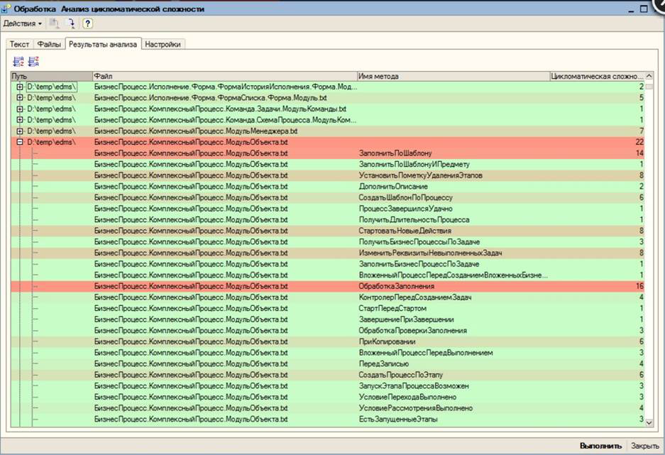
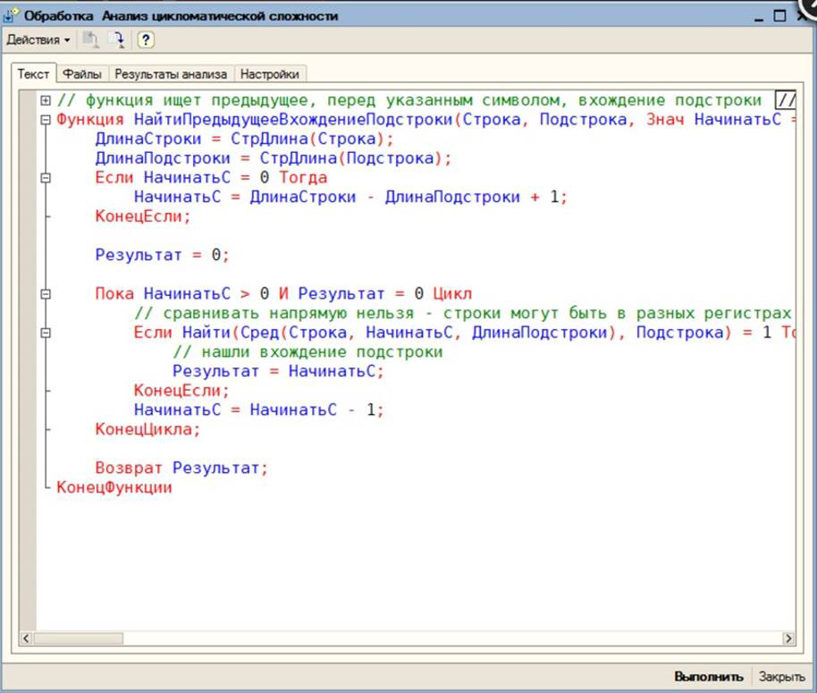
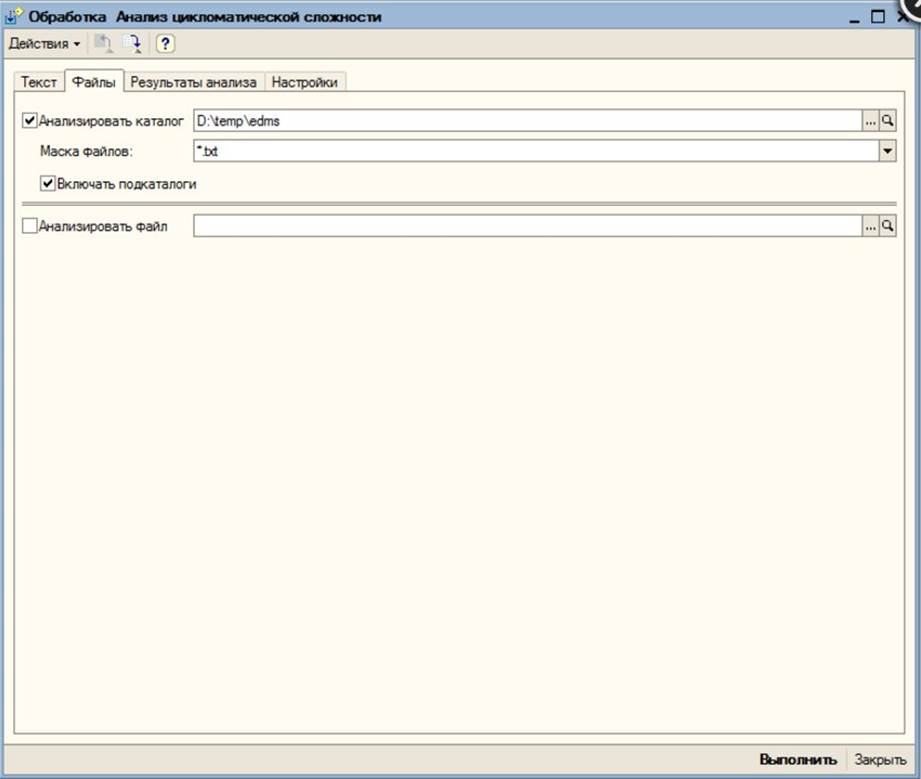

Инструмент для контроля сложности написанного кода для 1С8.
Пригодится разработчикам, которые заботяться о качестве своего продукта, простоте его тестирования и дальнейшей поддержке.

Рис. 1 Результаты анализа

Рис.2 Анализ кусочка кода

Рис.3 Анализ текстовых файлов
Если у вас есть опыт разработки информационных систем, вы наверняка знаете, что со временем (а иногда и сразу) написанный код усложняется и увеличивается в размере. Это приводит к тому, что становится сложно предсказать, к каким последствиям может привести модификация кода, а количество тестов, которые нужно провести, растет экспоненциально с ростом количества циклов и условий.
Иногда встречаются рекомендации по написанию вроде "старайтесь, что бы тексты ваших методов не превышали размера экрана". Очевидно, что это несерьезное требование, тем более, что в профессиональном мире давно уже существуют метрики на сложность кода. Одна из таких метрик - цикломатическая сложность. Что это и как она рассчитывается - можно почитать в википедии (статья на английском написана лучше).
Данный инструмент предназначен для расчета цикломатической сложности любого участка кода - фрагмент модуля, отдельного метода, целого модуля или набора модулей. Все менеджеры знают, что управлять чем-то возможно только тогда, когда это можно измерить. На мой взгляд, использование такой метрики сложности кода, как цикломатическая сложность, отлично подходит для выявления проблемых мест конфигурации, нахождения точек, которые требуют реинжиниринга. А данный инструмент поможет вам в этом.
Как использовать данный инструмент:
- Открыть обработку в 1С:Предприятии 8.
- Вставить фрагмент кода, который вы хотите проанализировать в поле на закладке "Текст"
или выбрать каталог, в котором лежат искодные коды модулей (в текстовом виде), указав маску выбора фалов
или выбрать файл с текстом исходного кода.
- Нажать на кнопку "Выполнить".
- Полученные результаты можно отсортировать по любой из колонок дерева результатов. Для наглядности, отдельные методы в дереве результатов подкрашиваются в цвет, символизирующий его сложность.
- На закладке "Настройки" можно поменять цвета, настройки градиента раскрашивания.
Как применять это в реальной жизни?
В комментариях попросили рассказать, как это применять в реальной жизни. Делюсь своими рекомендациями, основанными на внедрении этого инструмента в нашем коллективе:
- Оптимум метрики: не стОит вводить. Мы ограничились введением верхнего допустимого значения. Исследования, о которых говорится в википедии в разделе "Применение", рекомендуют ограничивать сложность на уровне 10. В отдельных случая можно допустить поднятие лимита до 15. Сложность более 50 гарантирует вам головную боль при поддержке.
Учитывая специфику разработки ИС (мало математически строгих алгоритмов - всегда нужны какие-то исключения и допущения), мы подняли допустимую верхнюю границу сложности до 14. В отдельных случаях, допускается превышение до 20 с обязательным комментарием в коде метода, чем вызвана необходимость повышенной сложности.
- Разработчик, при передаче задачи в тест, самостоятельно замеряет сложность кода который он произвел/модифицировал. При необходимости, некоторые части выносятся в отдельные методы. В ряде случаем это также увеличивает или облегчает повторное использование кода.
- Для разработчиков, которые систематически превышают максимально допустимую сложность кода, можно применять штрафные санкции.
- Кстати, не стоит брать типовые конфигурации в качестве ориентира по сложности кода. Самое высокое значение цикломатической сложности, которое я видел, было около 350. И да, это был типовой регламентированный отчет.
Примечания по использованию:
- Поддерживается анализ кода написанного как на русском, так и на английском языке.
- Обработка работает в обычном (не управляемом) приложении, но исходный код может анализировать как для обычного, так и для управляемого приложения. Если вам нужна версия обработки для работы под управляемым приложением - пишите в комментариях или в личку.
- Вы можете использовать обработку по своему усмотрению в рамках действующего законодательства вашего государства. Единственная просьба: если у вас есть замечания или предложения по улучшению обработки, а также в случае нахождения багов - пишите мне об этом в комментариях или мне в личку.